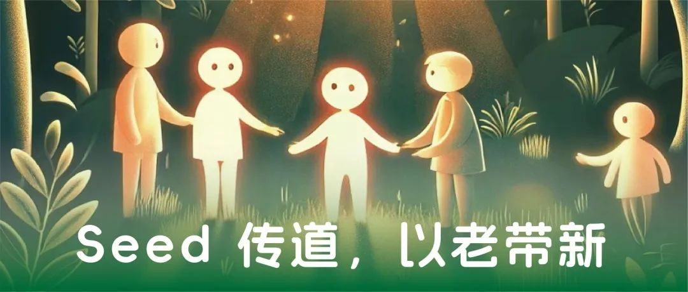
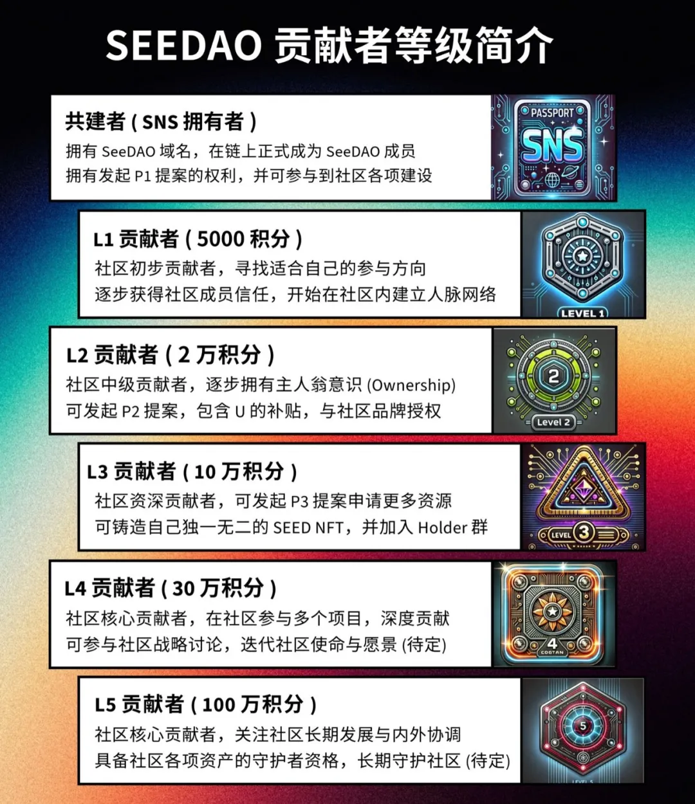
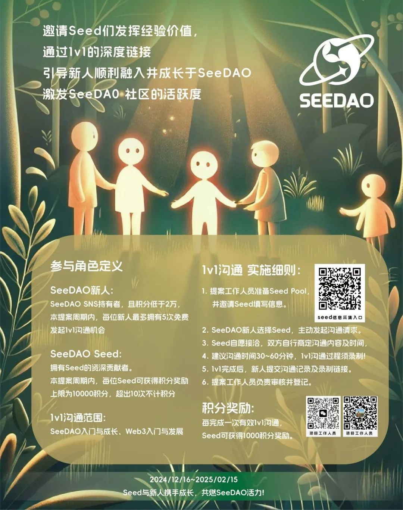

GN，SeeDAO诚邀所有新老朋友共同参与，通过“Seed 传道，以老带新”的活动，帮助行业新人们快速成长，丝滑融入社区，带动社区焕发新活力🐸 呱~
一、欢迎新人积极参与！
加入SeeDAO，快速融入Web3世界
如果您是SeeDAO的新朋友，持有SeeDAO SNS并且SCR积分低于2万，您将有机会通过1v1沟通与经验丰富的Seed导师进行深度交流！
SNS：SeeDAO Name Service，是 SeeDAO 数字城邦的身份协议，也是你在 SeeDAO 中的独有昵称，能够连接城邦生态中的所有场景和应用。
您将能够直接向社区Seed请教关于SeeDAO的治理、特性和Web3的知识与发展，帮助您更好地了解和融入这个充满活力的社区✨✨
发起1v1沟通，获得成长机会
在活动期间，每位新人最多可发起5次免费的1v1沟通机会，您可以选择自己感兴趣的Seed导师进行沟通。通过1v1交流，您不仅能获得有价值的经验分享，还能在Web3领域快速成长！

图：Ricky
二、赏金邀请社区 Seed Holder 加入传递经验价值！
分享您的经验，助力新人成长
作为SeeDAO的资深贡献者，您在Web3和SeeDAO方面积累了丰富的经验，诚邀您参与到这次“Seed 传道，以老带新”活动中，帮助新人快速了解SeeDAO，顺利融入社区，激发社区活力与发展。
1v1深度沟通，共同成长
通过与新人进行1v1沟通，您不仅能传授宝贵经验、教学相长，还能为新人提供指导和支持，帮助他们在Web3世界中更好地前行。每次有效沟通，您将获得1000积分奖励，最多可获得10000积分奖励。
赋能新人成长，共享SeeDAO活力
您的分享将直接影响SeeDAO社区的未来发展。通过与新人的沟通，您将在活动中起到至关重要的支持作用，帮助SeeDAO培养更多的优秀成员，共同缔造更美好的Web3新世界。
活动时间：即日起至2025年2月15日
相关文章：Mint SNS，领取你的数字城邦身份
